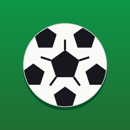
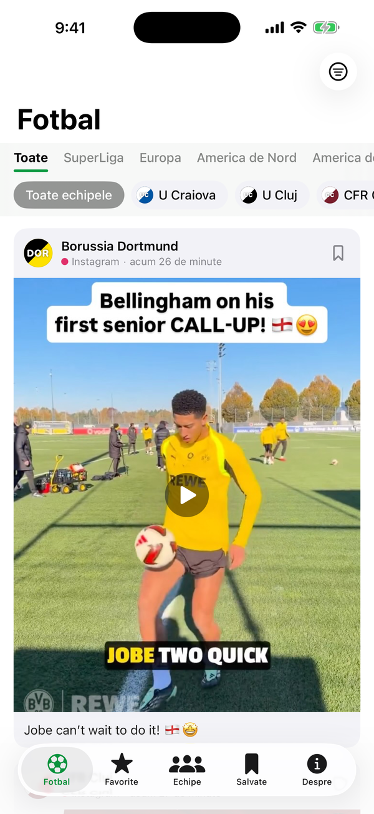
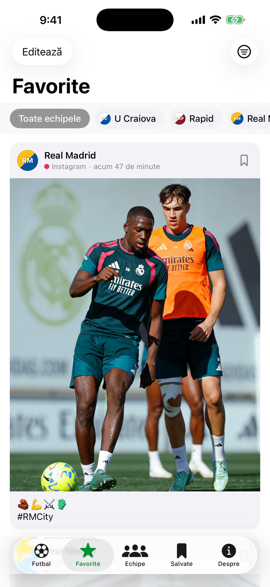
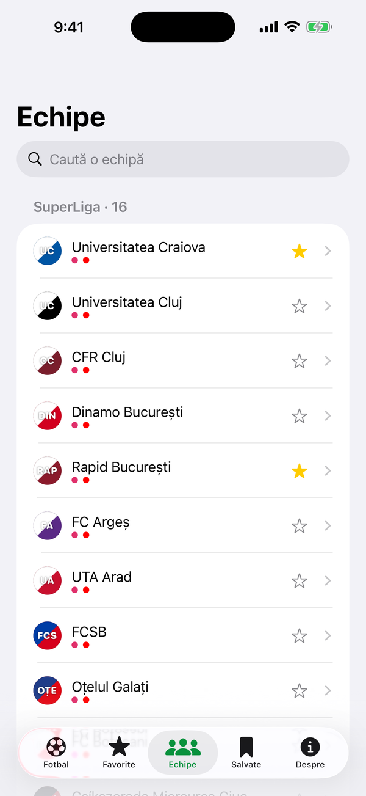

Toate postările de Instagram și YouTube ale echipelor din SuperLiga României și ale marilor cluburi din toată lumea, într-un singur feed, în ordinea în care au apărut. Filtrezi pe regiune (SuperLiga, Europa, America de Nord, America de Sud, Africa, Asia, Restul lumii), pe echipă sau pe rețea, iar o atingere deschide postarea originală în aplicația Instagram sau YouTube.
Îți alegi echipele favorite, răsfoiești toate cluburile pe regiuni și salvezi postările ca să le revezi. Aplicația e în 8 limbi (română, engleză, spaniolă, franceză, portugheză, germană, italiană, arabă) și o alege automat pe cea a telefonului.



De unde vin postările?
Din conturile publice oficiale de Instagram și YouTube ale cluburilor. Feed-ul se actualizează automat la fiecare 30 de minute.
Aplicația e oficială?
Nu. Kickfeed este o aplicație independentă, neafiliată, nesponsorizată și neaprobată de vreun club, ligă sau federație. Numele echipelor sunt folosite doar pentru identificare, iar postările aparțin cluburilor.
Îmi trebuie cont?
Nu. Aplicația nu are cont, reclame sau cumpărături. Favoritele și postările salvate rămân doar pe telefonul tău.
Lipsește echipa mea.
Scrie-ne și o adăugăm.
Kickfeed brings the public Instagram and YouTube posts of football clubs from Romania's SuperLiga and from around the world into one feed. Filter by region, team or network, pick your favorite teams, browse every club by region and save posts for later. Tapping a post opens it in the Instagram or YouTube app. Available in English, Romanian, Spanish, French, Portuguese, German, Italian and Arabic; it follows your phone's language.
Kickfeed is an independent, unofficial app, not affiliated with, sponsored or endorsed by any club, league or federation. No account, no ads, no personal data collected. Support: danieldraghicioiu@gmail.com
Email: danieldraghicioiu@gmail.com
WhatsApp: +40 765 373 595